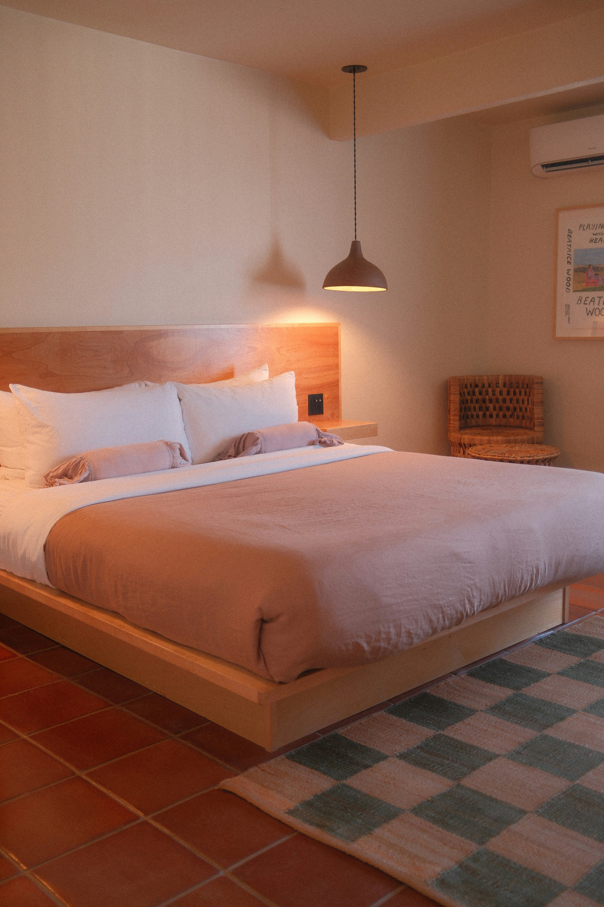
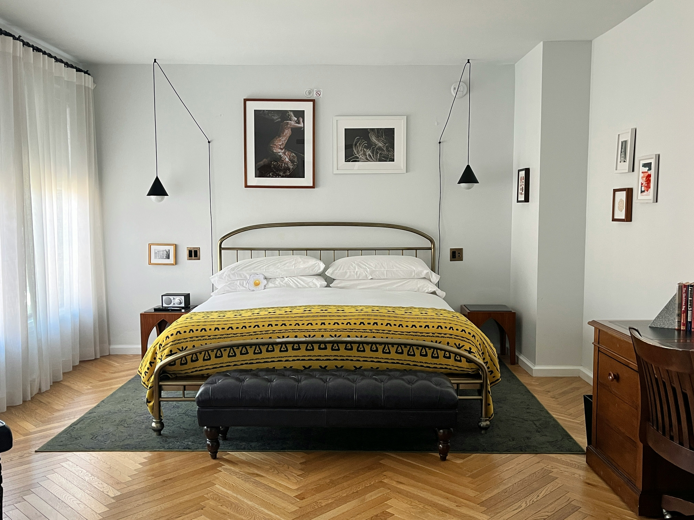

Casa Luna Boutique Hotel
Una pausa entre viñedos en Querétaro.
Descubrir Casa LunaHABITACIONES
Descansa diferente

Suite Luna
Cama king size, terraza privada y desayuno incluido.

Suite Jardín
Una habitación tranquila con vista a los jardines.

Suite Premium
Nuestra experiencia más exclusiva rodeada de naturaleza.
CASA LUNA
Una pausa entre viñedos
Rodeado de viñedos y paisajes únicos de Querétaro, Casa Luna nace como un refugio para desconectarse del ritmo cotidiano y disfrutar de la tranquilidad, el vino y la naturaleza.
Cada espacio ha sido diseñado para ofrecer una experiencia íntima y relajada, combinando arquitectura contemporánea, hospitalidad y el carácter de la región vinícola queretana.
Entre viñedos
Despierta rodeado de paisajes, naturaleza y los viñedos de Querétaro.
Sabores locales
Descubre vinos, quesos y gastronomía inspirada en los sabores de nuestra región.
Desconecta
Un espacio pensado para bajar el ritmo, descansar y disfrutar el momento.
UBICACIÓN
En el corazón de la ruta del vino
Casa Luna se encuentra rodeada de viñedos, paisajes abiertos y algunos de los destinos gastronómicos más especiales de Querétaro.
Casa Luna Boutique Hotel
Ruta del Vino, Querétaro, México
A 20 min de Tequisquiapan
A pocos minutos de viñedos y queserías
Abrir en Google MapsRESERVACIONES
Reserva tu estancia
Elige la opción que prefieras para consultar disponibilidad y reservar tu próxima estancia en Casa Luna.
Booking
Consulta disponibilidad, precios y reserva a través de Booking.
Reservar en Booking → 02Airbnb
Encuentra nuestra propiedad y realiza tu reservación desde Airbnb.
Reservar en Airbnb → 03Reserva directa
Habla directamente con nosotros para consultar fechas, tarifas y disponibilidad.
Contactar por WhatsApp →CONTACTO
¿Listo para desconectar?
Querétaro, México
+52 442 000 0000
reservaciones@casaluna.com